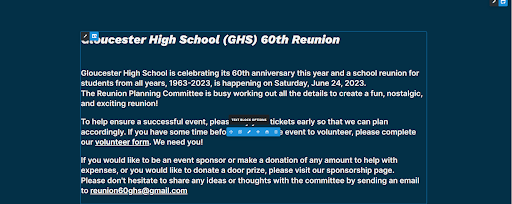
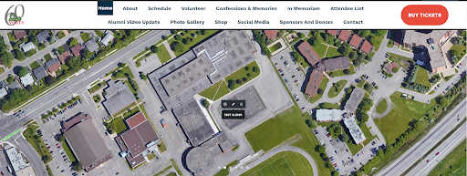
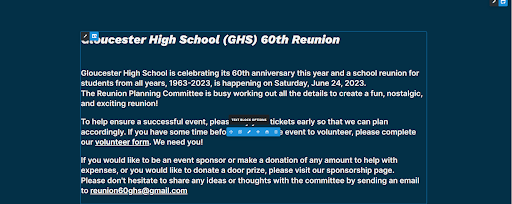
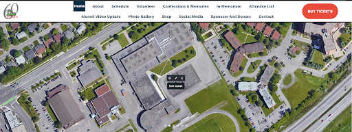

Minh "Maris" Tran
Computer Engineering Student
Toronto Metropolitan University
“Web Development | Problem Solving | Eager for Graduate IT Opportunities”
About
Fourth-year Computer Engineering student with 3 internships and 5+ applied projects. Brings deep knowledge of web development, Agile methodology, and accessibility standards (WCAG 2.1). Experienced in SDLC, team collaboration and delivering responsive, standards-compliant websites across public and academic sectors.
Skills
Languages & Core Tech
- HTML
- CSS
- JavaScript
- Python
Frameworks & Libraries
- jQuery
- Bootstrap
- React
- Node.js
Microsoft Ecosystem Tools
- Word
- Excel
- PowerPoint
- Power BI
- SharePoint Online
- Microsoft Lists
Development Tools
- Visual Studio Code
- Cursors
Education
Bachelor Of Engineering - Computer Engineering
Sept 2021 - Present
- Completed 5+ team based academic projects in both hardware and software, applying Java,MySQL and Agile methodology to solve real-world engineering problems.
- Gained advanced understanding of Data Structure, Object-Oriented Design and Algorithm Analysis with practical applications in software design and optimization.
- Interpreted stakeholder requirements course to build projects specifications, demonstrating strong abilities in Project Planning, Requirement Mapping and Team collaboration
- Applied classroom theory during 12 months of Co-op at the City of Brampton, leveraging skills in operating systems, digital logic, and system design in professional workflows.
C
Java
MySQL
VHDL
Assembly
Experience
Web Content Technologist Co-op Student
Sept 2024 - Sept 2025
- Ranked in the top 5% of global Siteimprove users, raising accessibility from 66 → 89 and QA from 74 → 90 in 6 months across 1,500+ webpages using WCAG 2.1, HTML, CSS, JavaScript, and Bootstrap.
- Delivered 3+ SharePoint Online projects with Visio across multiple departments, collaborating in a 7-member Agile team via daily stand-ups and ticket reviews.
- Supported UX by producing mockups and wireframes in Adobe XD, Visio, and Excel, aligning site structure with accessibility and usability standards.
HTML
CSS
JavaScript
Bootstrap
jQuery
SharePoint Online
Power Automate
MS Azure
Visio
MS Teams
Outlook
Web Developer Remote Internship
Jan 2025 - Mar 2025
- Designed and deployed accessible, responsive digital forms using Semantic HTML, CSS3, and JavaScript, improving cross-browser compatibility and mobile usability.
- Collaborated with a 3-member team to enhance the booking system using Wix Studio with custom SQL integrations, achieving a 20% increase in booking efficiency and a 15% increase in consultation payments in the first month.
- Implemented accessibility-first design principles and WCAG best practices to ensure an inclusive user experience.
HTML
CSS
JavaScript
Wix Studio
SQL
Software Developer Remote Internship
Mar 2024 - May 2024
Gloucester High School - Ottawa, ON
- Revamped and modernized a school reunion website used by 500+ alumni, enhancing performance and accessibility across devices.
- Redesigned the front-end using advanced CSS and UX/UI principles, leading to a 40% improvement in user engagement based on site analytics.
- Integrated custom WordPress components to streamline reunion event content, improving load times by 30% through optimized database queries.
- Developed a back-end structure to manage a database of over 1,200 alumni records, improving information retrieval and admin workflows.
- Authored technical documentation and styling guidelines to ensure future scalability and maintainability.
CSS
JavaScript
WordPress
PostgreSQL
UX/UI Design
Responsive Design
Sales Associate
Feb 2022 - Oct 2022
Mr. Sub - Toronto, ON
- Spearheaded initiatives to enhance team collaboration by launching regular staff meetings and open communication practices, resulting in a 20% reduction in service wait times and improved workflow efficiency.
- Delivered exceptional customer service by promoting a customer-first mindset, leading to a 15% increase in repeat visits and contributing to a 10% boost in overall store sales.
- Actively supported day-to-day operations, including POS transactions, food preparation, and cleanliness compliance, maintaining high standards under peak-hour pressure.
Team Leadership
Customer Service
Sales Growth
Operations Management
Projects
Waste Management System Development
City of Brampton | Jul 2025 - Present
- Independently built and maintained the Peel Region Waste Management system on brampton.ca, supporting thousands of residents.
- Redesigned and expanded the waste sorter database to include 600+ material entries, ensuring accurate categorization and faster retrieval.
- Developed a custom search engine with SEO optimization and integrated QA testing to improve discoverability and user experience.
- Constructed responsive content pages using SharePoint Online, HTML, CSS, and JavaScript, aligned with accessibility standards.
HTML
CSS
JavaScript
SharePoint Online
SEO
Quality Assurance
Accessibility (WCAG 2.1)
Internal Audit Portal Development
City of Brampton | Apr 2025 - Present
- Built a centralized SharePoint site to manage 300+ audit reports from 2018–present, ensuring fast retrieval and logical structure.
- Automated report metadata tagging and display logic using JavaScript and custom SharePoint features.
- Styled and structured ~100 new content pages with consistent formatting and accessibility best practices.
- Authored a technical guideline manual to onboard internal audit staff on content management workflows.
HTML
JavaScript
SharePoint Online
Excel
Accessibility (WCAG 2.1)
Quality Assurance
GrowGreen Web Reorganization
City of Brampton | Jan 2025 – Jul 2025
- Rebuilt 65+ pages of content and layouts using SharePoint Online, HTML, CSS, and Bootstrap, following design specifications from Design Specialists.
- Implemented frontend logic with JavaScript and jQuery for interactive components and dynamic content rendering.
- Developed mockup pages using Adobe XD and Visio to map structure and styling before full rollout.
- Collaborated with a cross-functional team five-member and improved site traffic by 20% using Siteimprove analytics.
- Delivered technical documentation and ran training sessions for department editors.
HTML
CSS
JavaScript
jQuery
SharePoint Online
Bootstrap
Adobe XD
Visio
Accessibility (WCAG 2.1)
SEO
BEMO Web Revamp
City of Brampton | Jun 2025 - Aug 2025
- Redesigned and streamlined 20+ emergency management pages to enhance clarity and usability for residents seeking crisis resources.
- Integrated emergency preparedness checklists, links to external relief services, and dynamic content using SharePoint scripts.
- Applied modern accessibility and design standards across pages like Shelter-in-Place, Fire, and Emergency Planning, improving mobile and screen reader support.
- Participated in UX review sessions with Emergency Management team and implemented content revisions.
HTML
CSS
jQuery
SharePoint Online
Accessibility
The Clean Divorce – Website Enhancement
The Clean Divorce | Jan 2025 - Mar 2025
- Worked in a 5-member remote team to redesign intake forms and landing page for a family legal services platform.
- Implemented fresh layout and calming visuals using HTML, CSS, and WIX Studio; contributed to a 20% increase in consultation submissions.
- Automated intake tracking and email generation workflows for 200+ clients using WIX backend logic and Google Sheets integration.
HTML
CSS
JavaScript
WIX Studio
Google Sheets
UX/UI
Gloucester High School – Reunion Website Redesign
Gloucester High School | Mar 2024 - May 2024
- Led front-end redevelopment of the school reunion site in a 3-person remote team using WordPress.
- Enhanced UI/UX with custom CSS and streamlined 1,200+ alumni records through optimized database structure.
- Improved user satisfaction and engagement through modern responsive design and analytics-driven adjustments.
WordPress
CSS
PostgreSQL
JavaScript
UX/UI Design
Eebot Maze Navigation System
Toronto Metropolitan University | Nov 2023 – Dec 2023
- Built an autonomous maze-solving robot using embedded logic and assembly language.
- Integrated IR sensors and refined real-time path navigation.
- Contributed to system debugging and calibration in a team of 4 students
Assembly
Embedded Systems
Sensor Integration
Hardware Automation
AnimeTrending Web App
Personal Project | Apr 2024 - May 2024
- Developed a React.js web app fetching anime data via public API.
- Built a sleek, responsive UI with HTML, CSS, and JavaScript.
- Deployed on Netlify with fast load times and mobile optimization.
React.js
HTML
CSS
JavaScript
API Fetching
Netlify Hosting


 


